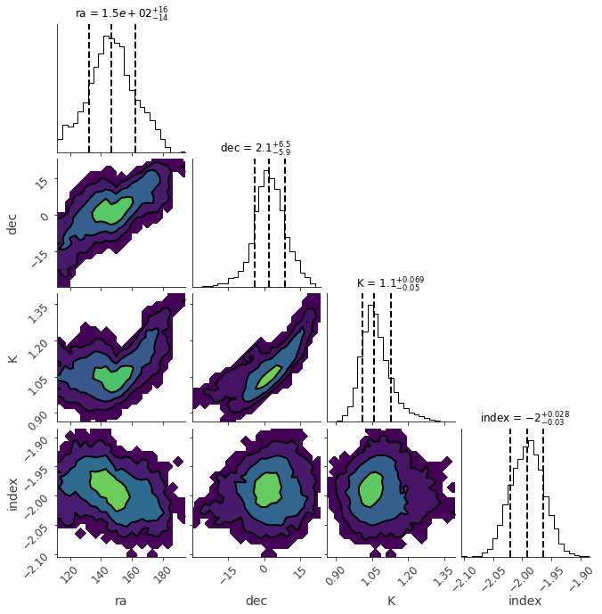
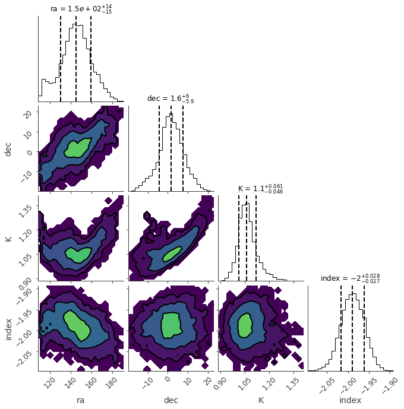

Localization with RBallLike
rball provides a 3ML plugin that can perform localization of point sources.
First we need to read in the database.
[1]:
from astromodels import Powerlaw, PointSource, Model, Log_uniform_prior, Uniform_prior
from threeML import BayesianAnalysis, DataList
from rball import ResponseDatabase, RBallLike
from rball.utils import get_path_of_data_file
import h5py
%matplotlib inline
[WARNING ] The naima package is not available. Models that depend on it will not be available
[WARNING ] The GSL library or the pygsl wrapper cannot be loaded. Models that depend on it will not be available.
[WARNING ] The ebltable package is not available. Models that depend on it will not be available
[INFO ] Starting 3ML!
[WARNING ] no display variable set. using backend for graphics without display (agg)
[INFO ] Starting 3ML!
[WARNING ] no display variable set. using backend for graphics without display (agg)
[WARNING ] ROOT minimizer not available
[WARNING ] Multinest minimizer not available
[WARNING ] PyGMO is not available
[WARNING ] The cthreeML package is not installed. You will not be able to use plugins which require the C/C++ interface (currently HAWC)
[WARNING ] Could not import plugin HAWCLike.py. Do you have the relative instrument software installed and configured?
[WARNING ] Could not import plugin FermiLATLike.py. Do you have the relative instrument software installed and configured?
[WARNING ] No fermitools installed
[WARNING ] Env. variable OMP_NUM_THREADS is not set. Please set it to 1 for optimal performances in 3ML
[WARNING ] Env. variable MKL_NUM_THREADS is not set. Please set it to 1 for optimal performances in 3ML
[WARNING ] Env. variable NUMEXPR_NUM_THREADS is not set. Please set it to 1 for optimal performances in 3ML
[2]:
file_name = get_path_of_data_file("demo_rsp_database.h5")
with h5py.File(file_name, "r") as f:
# the base grid point matrices
# should be an (N grid points, N ebounds, N monte carlo energies)
# numpy array
list_of_matrices = f["matrix"][()]
# theta and phi are the
# lon and lat points of
# the matrix database in radian
theta = f["theta"][()]
phi = f["phi"][()]
# the bounds of the response
ebounds = f["ebounds"][()]
mc_energies = f["mc_energies"][()]
rsp_db = ResponseDatabase(
list_of_matrices=list_of_matrices,
theta=theta,
phi=phi,
ebounds=ebounds,
monte_carlo_energies=mc_energies,
)
We can create an RBallLike from normal PHA files. We will use a simulated spectrum that comes from a position on the sky (RA: 150 Dec: 0) with a power law spectrum.
[3]:
demo_plugin = RBallLike.from_ogip(
"demo",
observation=get_path_of_data_file("demo.pha"),
spectrum_number=1,
response_database=rsp_db,
)
[INFO ] Auto-probed noise models:
[INFO ] - observation: poisson
[INFO ] - background: None
[INFO ] Auto-probed noise models:
[INFO ] - observation: poisson
[INFO ] - background: None
Fitting for the localization
We will create a 3ML point source and assign priors to the spectral parameters. The RBallLike plugin automatically assigns uniform spherical priors to the sky position. This can always be altered in the model
[4]:
source_function = Powerlaw(K=1, index=-2, piv=100)
source_function.K.prior = Log_uniform_prior(lower_bound=1e-1, upper_bound=1e1)
source_function.index.prior = Uniform_prior(lower_bound=-4, upper_bound=0)
ps = PointSource("ps", 150.0, 1.0, spectral_shape=source_function)
model = Model(ps)
[5]:
ba = BayesianAnalysis(model, DataList(demo_plugin))
[INFO ] freeing the position of demo and setting priors
[6]:
model
[6]:
Model summary:
Free parameters (4):
Fixed parameters (2):
(abridged. Use complete=True to see all fixed parameters)
Linked parameters (0):
(none)
Independent variables:
(none)
| N | |
|---|---|
| Point sources | 1 |
| Extended sources | 0 |
| Particle sources | 0 |
Free parameters (4):
| value | min_value | max_value | unit | |
|---|---|---|---|---|
| ps.position.ra | 150.0 | 0.0 | 360.0 | deg |
| ps.position.dec | 1.0 | -90.0 | 90.0 | deg |
| ps.spectrum.main.Powerlaw.K | 1.0 | 0.0 | 1000.0 | keV-1 s-1 cm-2 |
| ps.spectrum.main.Powerlaw.index | -2.0 | -10.0 | 10.0 |
Fixed parameters (2):
(abridged. Use complete=True to see all fixed parameters)
Linked parameters (0):
(none)
Independent variables:
(none)
Now we can sample the spectrum and position to do the localization.
[7]:
ba.set_sampler("emcee")
ba.sampler.setup(n_walkers=50, n_iterations=1000.0, n_burnin=1000)
[INFO ] sampler set to emcee
[8]:
ba.sample()
[INFO ] Mean acceptance fraction: 0.47888000000000003
Maximum a posteriori probability (MAP) point:
| result | unit | |
|---|---|---|
| parameter | ||
| ps.position.ra | (1.45 -0.15 +0.14) x 10^2 | deg |
| ps.position.dec | 2 +/- 6 | deg |
| ps.spectrum.main.Powerlaw.K | 1.07 +/- 0.05 | 1 / (cm2 keV s) |
| ps.spectrum.main.Powerlaw.index | -1.989 -0.027 +0.028 |
Values of -log(posterior) at the minimum:
| -log(posterior) | |
|---|---|
| demo | -407.673085 |
| total | -407.673085 |
Values of statistical measures:
| statistical measures | |
|---|---|
| AIC | 823.671373 |
| BIC | 834.754291 |
| DIC | 819.702377 |
| PDIC | 0.011766 |
[9]:
ba.results.corner_plot()
WARNING MatplotlibDeprecationWarning: You are modifying the state of a globally registered colormap. This has been deprecated since 3.3 and in 3.6, you will not be able to modify a registered colormap in-place. To remove this warning, you can make a copy of the colormap first. cmap = mpl.cm.get_cmap("viridis").copy()
[9]:


[ ]: